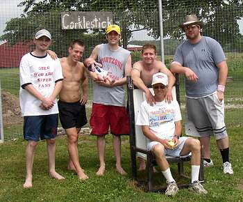
Opening Day 2005 featured six of the all-time greats. Pictured left to right: Ryan Tomlinson, Greg Howard, Patrick Cork (with Caleb), Josh Williamson, Tony Cork (seated) and Dustin Waldrop |
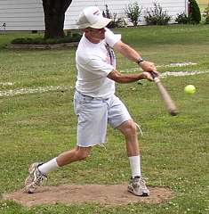
Tony Cork picked up his 45th career win in the opener allowing 2 runs on 7 hits. |
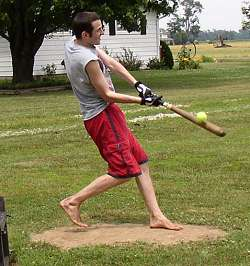
Patrick Cork's 3-run homerun in the sixth inning was the game winner. He also picked up the save with 2 scoreless innings, striking out 5. |
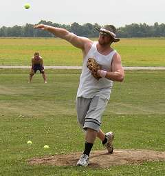
Dustin Waldrop picked up the loss in the opener despite allowing just 3 runs over 8 innings of work. |
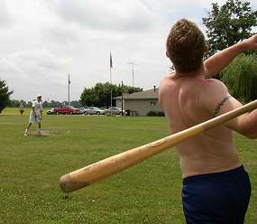
Josh Williamson swings away at a Tony Cork delivery. Williamson had a 2-run triple and scored twice on the day. |
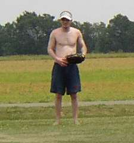
Ryan Tomlinson returned after missing the last 3 years and homered in the opener. Tomlinson finished the day 6-for-23. |
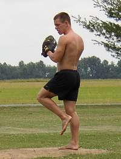
Greg Howard was the star of game two picking up the win in extra innings. After a 4-run first, Howard retired 26 consecutive batters en route to the 5-4 win.
|
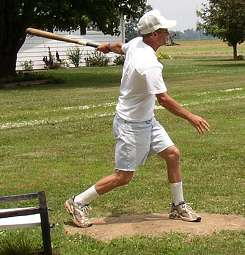
Tony Cork finished the day 10-for-27 with 3 runs scored to become just the second player in league history with 500 careeer hits.
|
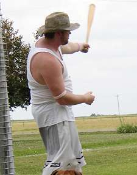
Dustin Waldrop homered twice on the day giving him 74 career long balls - second most all-time.
|
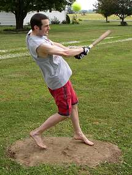
Patrick Cork homered twice in the second game and finished the day 10-for-27 with 3 homers and 7 RBI.
|
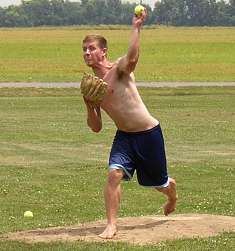
Josh Williamson suffered the loss in game 2 allowing 5 runs (4 earned) in 10 innings. He also finished the day with 4 outfield assists.
|
Greg Howard finished the day 7-for-28 to help his team to a pair of victories. Howard became just the third player in history to reach the 300-hit milestone.
|